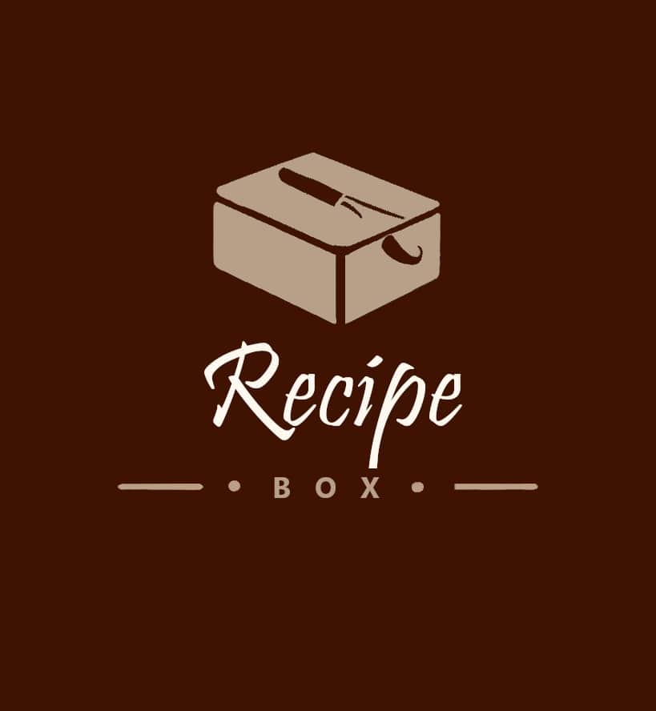

-

Recipe Box
One of my pet peeves is the frustrating experience of searching for recipes online, only to be bombarded with ads and lengthy blog content. To tackle this issue, I embarked on a project to create a user-friendly, ad-free web application solely focused on providing recipes.
This project has been my favorite and most enlightening endeavor to date. I built a REST API from scratch, utilized Docker containers to manage both the backend and frontend, and employed MongoDB to store recipe data and user-contributed recipes. Hosting the application on Google Cloud Run through Google Domains brought it to life.
The result is a fully functional, blog-free platform where users can effortlessly find recipes, save their favorites, and even contribute their own. I've gained invaluable knowledge in full-stack web development and derived immense satisfaction from offering users a straightforward and genuine recipe-finding experience.
-
Clue: Lord of the Rings
This project was a delightful exploration of Java graphics to create an online version of the Clue board game, infused with the captivating world of Lord of the Rings. It was a labor of love that spanned several months, involving the meticulous addition of the map, ambient sound, and captivating elements like characters, weapons, and rooms.
The coding process itself was enjoyable, allowing me to practice unit testing, revisit my first language, Java, and refine my object-oriented programming skills. However, I must admit that incorporating the complex rules of Clue into a video game presented a challenging task. Despite the complexity, I embraced the challenge and found the pursuit intriguing.
In the end, I successfully crafted an engaging Lord of the Rings Clue game, which was both rewarding and a source of fun learning experiences.
-

Raspberry Pi Communication
This side project began as a simple inquiry but quickly evolved into a captivating endeavor as I delved deeper into the intricacies of data transmission over a network. With access to multiple Raspberry Pis, I set out to analyze real-time data from a room, and return the location of any individual based on the vibration data of their foot steps.
While initially seeming straightforward, the project turned out to be more challenging than expected. After thorough research and diving into documentation, I successfully developed two classes for each Pi to operate in the terminal. The client class utilized Python's socket and pickle libraries to convert the data dictionary into a byte stream and transmit it to the corresponding server class. The server class, in turn, listened on the network and decrypted the received data. Once set up, I transmitted data over my home internet to one of the Pis, allowing it to perform calculations on the received data.
Despite the project's complexity, I relished every moment of it. Witnessing the programming I created interact with the world was an exciting and gratifying experience. It reinforced my passion for exploring the possibilities of data communication and its real-world applications.
-
Safety NET
Safety NET is a web application designed to enhance communication between first responders, students, and professors at Colorado School of Mines. The app integrates seamlessly with the existing Mines alert system, ensuring ease of use for all users.
The program serves as a map generation tool that empowers first responders during emergencies. They can quickly alert students about areas to avoid and identify safe zones on campus by marking areas to avoid on the map, rather than having to text students confusing instructions for misunderstood locations.
We invested significant time in extensive research on web development, URL generation, and campus maps. Additionally, we collaborated with stakeholders to fine-tune our solution. Our efforts were met with success, and we proudly earned first place in our section during the design competition.
Safety NET demonstrates our commitment to innovation and proactive problem-solving. We take pride in creating a meaningful solution that may someday contribute to the safety and well-being of the Colorado School of Mines community.
-

Cryptocurrency Bot
After diving into the world of cryptocurrencies and investing, I developed a keen interest in creating a trading bot capable of analyzing real-world market data and executing coin and stock transactions.
Crypto bot is a straightforward yet powerful program that utilizes various indicators like moving averages and support lines to make informed market trades. To ensure real-time data access, I integrated with a web API, fetching crucial data from exchanges like FTX and other cryptocurrency markets.
Implementing the API functionality was the most significant part of the project, as it was my first experience with APIs. However, the process proved invaluable, and I now recognize the immense utility that APIs offer. This project has ignited my curiosity further, and I'm eager to explore more API-related projects in the future.